前言
Zookeeper 作为分布式的一致框架，提供了原子性的写，而且好保证了高可用（集群有过半节点正常运行）。这些特点被广泛应用，比如 Hbase 用来存储配置信息，还用来保证主从切换。本篇文章介绍了 zookeeper 的核心算法 zab 协议，zab 协议是由所有节点必须遵守的，它们协同工作实现了分布式的一致性。
集群状态
zab 协议保证了集群在任何时刻，要么只有一个 leader，要么没有 leader。这两种情况称为广播模式和恢复模式：
- 处于广播模式的集群，能够正常对外提供服务，客户端可以正常的读写。
- 处于恢复模式的集群，不能对外提供服务，这时节点有可能处于选举过程，同步过程。
广播模式比较简单，就是和二阶段提交类型，但是允许不超过半数的服务挂掉。客户端的写入请求都会转发给 leader ，然后 leader 将消息发送给 follower，如果超过半数的follower响应成功，那么就提交 commit 操作，将数据持久化到磁盘。
恢复模式有一点复杂，它会从集群中选举出一个节点作为 leader，这个节点需要具有最新的数据。而且这个 leader 需要被过半节点认同。我们回想下 zookeeper 的写操作需要过半的节点完成才能认为成功，而选举也需要过半的节点都同意，那么两个集合之间必定有交叉，就可以保证选举出来的是有最新数据的节点。
当选举完成后，follower 会向 leader 同步数据。当多数 follower 同步完成后，就进入到广播模式。
启动过程
任何节点启动都遵循着同样的过程，加载数据，选举，同步，处理请求。
加载过程：zookeeper 的节点会在本地磁盘持久化数据，启动时会加载这些本地数据，这些数据都是根据事务 id 顺序存储的，这样就可以根据最大的事务 id 来判断数据的新旧
选举过程：各个节点相同通信，选举出一个共同的 leader 节点。这个 leader 节点的选票必须过半，并且有着最新的数据。
同步过程：当成为 follower 节点后，需要向 leader 节点同步数据，因为 follower 节点的数据可能落后于leader。
处理请求：当同步过程完成后，集群就可以对外提供读写服务了。
下面是节点运行的程序，可以看到节点在不同的时刻，会有着不同的状态。LOOKING 状态表示处于选举阶段，FOLLOWING 状态表示节点变为 follower 角色，而 LEADING 状态表示节点成为 leader 角色。
|
|
通信组件
zookeeper 集群有着多个节点，节点之间的通信都是通过网络。zookeeper 使用队列存储请求和响应，并且对于每个连接都有单独的读队列和写队列，同时还有单独的读线程负责解析请求，单独的写线程负责发送数据。
选举框架
zookeeper 的选举算法有多种，不过目前主要只使用 FastLeaderElection 算法，其余的已经被废弃了。FastLeaderElection 在通信组件的基础上还做了一层封装，它有两个线程，读线程 WorkerReceiver 和写线程 WorkerSender。读线程负责从通信组件的队列里读取请求，并且解析成选票请求，添加到投票请求队列。写线程负责把要发送的投票添加到通信组件的写队列里。
FastLeaderElection 选举算法
FastLeaderElection 选举会根据对方的状态来处理选票的，如果对方是 leader 或者 follower，那么说明集群中已经存在一个 leader了，这时只需要检测这个 leader 是否被过半节点认同。如果对方是looking 状态，那么需要比较是否处于同一轮选举，还有选票的大小。如果对方的选票比自身大，需要更改自身的选票，并且向其他节点发出通知。
下面先来看看选票包含了哪些重要信息
|
|
接下来看看选举原理，
|
|
我们再来看看 leader 角色或者 follower 角色是如何处理投票请求的。在 WorkerReceiver 线程里，会检查选票请求。如果自身是 leader 或者 follower，会直接返回自身的选票 。如果自身是 LOOKING 状态，那么就会将选票添加到队列里，等待选举算法处理。
|
|
选举完成后，各个节点的角色都已经确定好了，接下来继续看 leader 和 follower 角色的运行原理。
同步
同步的原理很简单，目的是为了让 follower 和 leader 的数据必须保持一致。通信过程如下：
如果 follower 节点落后太多，则需要全量同步来提高效率，返回 SNAP 响应。
如果落后不是太多，则选择增量同步，返回 DIFF 响应。
处理写请求
leader 节点接收到客户端的写请求，会先向follower角色（至少要保证过半的节点存活）发送 PROPOSAL 请求。
follower节点收到 PROPOSAL 请求后，会将此次请求存在内存中，然后返回 ACK 响应。
leader 如果有超过半数的节点成功响应 ACK，那么就会向 follower 节点发送COMMIT请求。
follower 节点收到 COMMIT请求后，会将内存的请求，持久化到磁盘中，表示数据成功写入。